Префектура Киото · «Киото у моря» · культура и ремёсла
«Киото у моря» зимой: каштаны, шёлк, глициниевая ткань и девять мест на севере префектуры
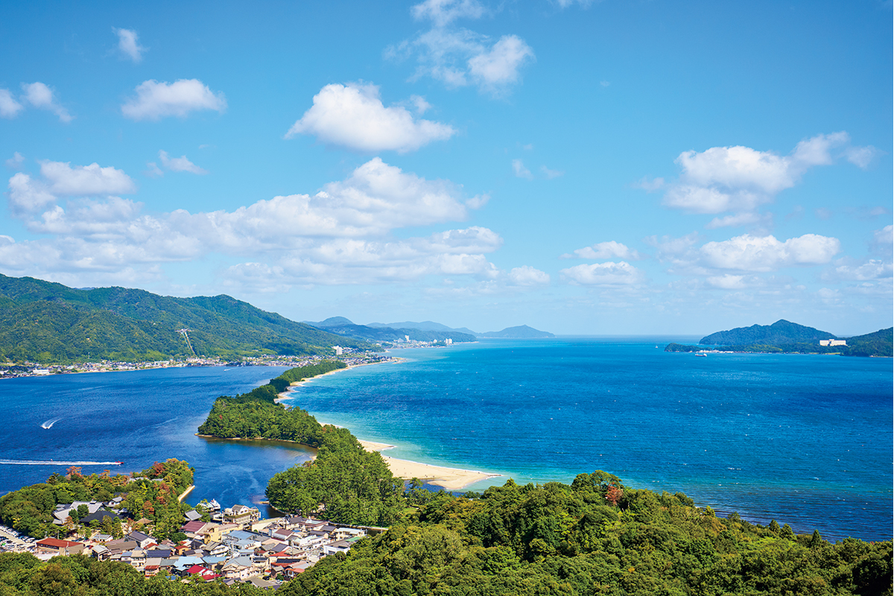
У префектуры Киото есть свой выход к Японскому морю, и этот край совсем не похож на город храмов. Зимой сюда едут за крабом и сакэ, но кроме еды здесь есть старые шёлковые мастерские, древняя ткань из глицинии и тихие деревни.
Край
Другое Киото
«Киото у моря» объединяет семь городов и посёлков на севере префектуры: Фукутияму, Майдзуру, Аябэ, Миядзу, Кётанго, Инэ и Ёсано. Самый известный их пейзаж это Аманохасидатэ, длинная коса через залив, где, по японским мифам, начиналось сотворение страны. С этими местами связано множество легенд, и у края сложилась собственная культура.
Ехать сюда стоит не только ради вида. Мы выбрали девять мест, где можно попробовать местную еду, увидеть, как работают ремёсла, и просто пожить в деревне. Они разбросаны от Фукутиямы и Аябэ на юге до полуострова Танго на севере, так что удобнее всего ездить на машине.
Сладости
«Адати Отоэмон»: каштаны в каждом кусочке
Кондитерский дом «Адати Отоэмон» родом из Фукутиямы и известен сладостями из каштанов. Каштаны здесь отбирают очень строго: из провинции Тамба и из других стран мира.
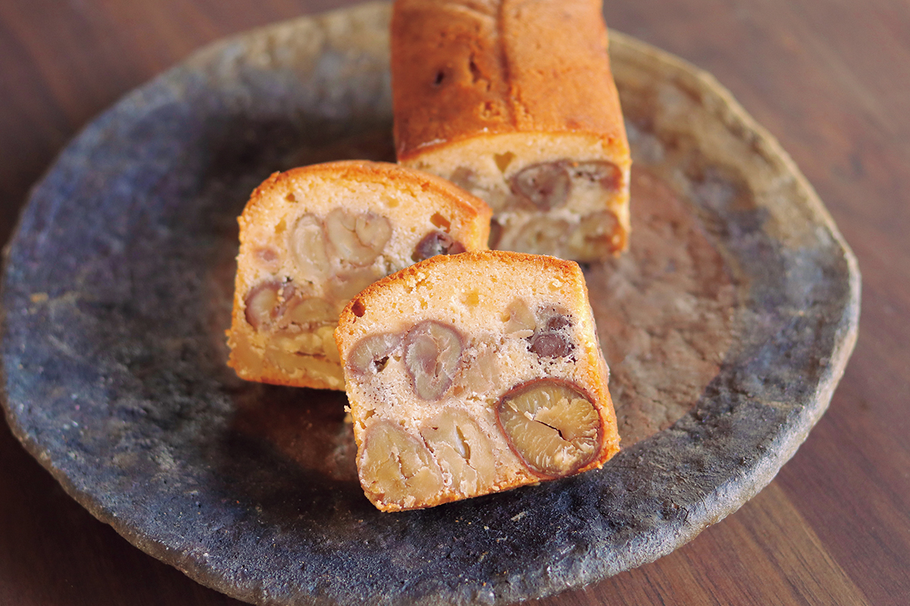
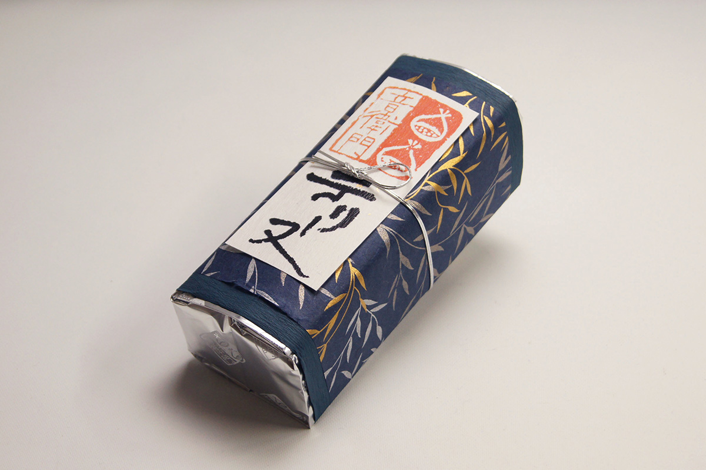
Главная сладость дома это «каштановый террин»: как его ни разрежь, на срезе обязательно окажутся целые каштаны. При магазине есть кафе в здании эпохи Тайсё (1912–1926) с духом тех романтических лет, оно охраняется префектурой как культурное наследие.
«Адати Отоэмон»
- Адрес
- префектура Киото, Фукутияма, Найки, 44-18
- Телефон
- +81 120-535-411
- Часы работы
- 10:00–18:00, кафе до 16:00 (последний заказ 15:30)
- Выходные
- без выходных
- Сайт
- otoemon.com
Архитектура
Красный кирпич Майдзуру
В Майдзуру стоят восемь складов из красного кирпича, и часть этого ряда перестроили в «Майдзуру Акарэнга Парк», парк красного кирпича. Сегодня это символ города. Здесь снимали много фильмов и сериалов: между кирпичными стенами и правда чувствуешь себя в другом времени.
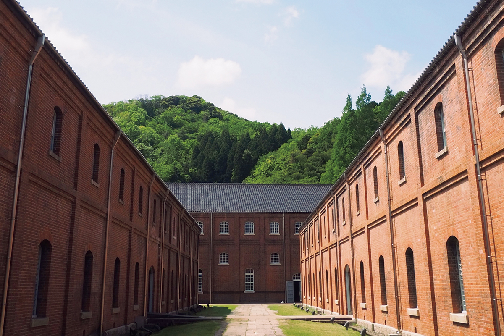
Внутри работают кафе, магазин местных продуктов и музей, время от времени проходят мероприятия. Снаружи здания можно осматривать свободно.
«Майдзуру Акарэнга Парк»
- Адрес
- префектура Киото, Майдзуру, Китасуи, 1039-2
- Телефон
- +81 773-66-1096
- Часы работы
- 9:00–17:00 (снаружи осмотр свободный)
- Выходные
- новогодние праздники
Ферма
Blueberry valley Maizuru: голубика в деревне из семи домов
В 2024 году в горной деревне на окраине Майдзуру, где живут всего семь семей, открылась туристическая ферма Blueberry valley Maizuru. В её кафе подают смузи и пиццу из только что собранной голубики.
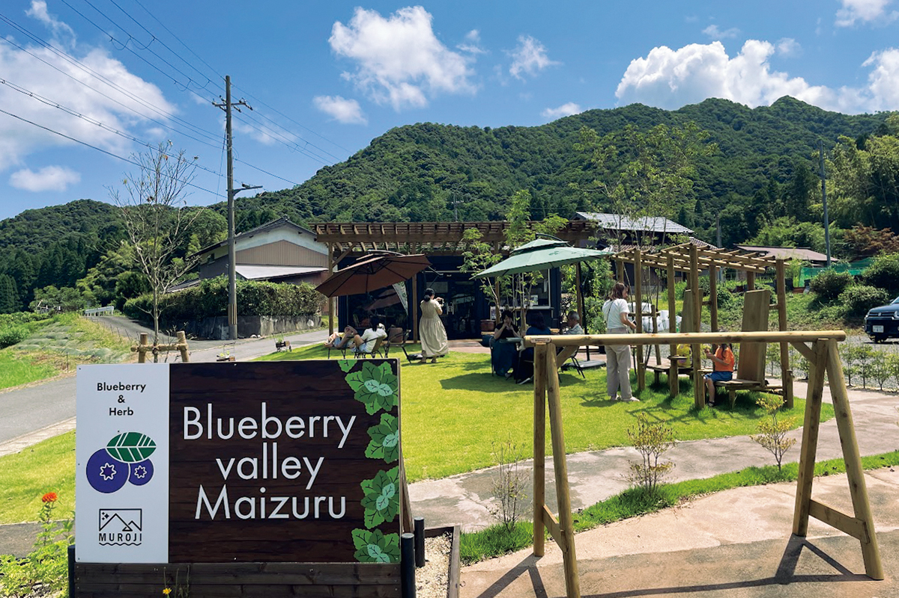
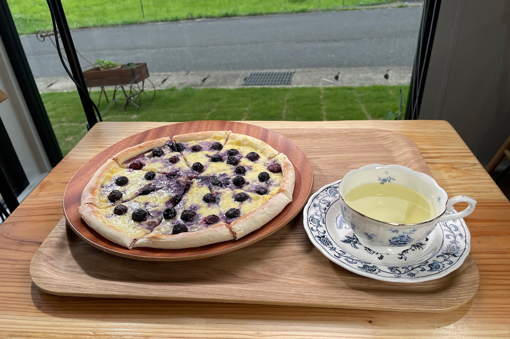
С июня по август на ферме можно самому собирать ягоды, и этот сезон очень популярен: здесь растёт 40 сортов голубики.
Blueberry valley Maizuru
- Адрес
- префектура Киото, Майдзуру, Муродзи, 121-1
- Телефон
- +81 773-60-8409
- Часы работы
- фермерское кафе berryherb 11:00–16:00
- Выходные
- четверг, пятница
Ночлег
NIOH no YADO: дом посреди полей
NIOH no YADO стоит в горной глубинке Аябэ, и гостям отдают весь дом целиком. Вокруг рисовые поля и лесистые холмы, и вид из окон похож на пейзажную картину.
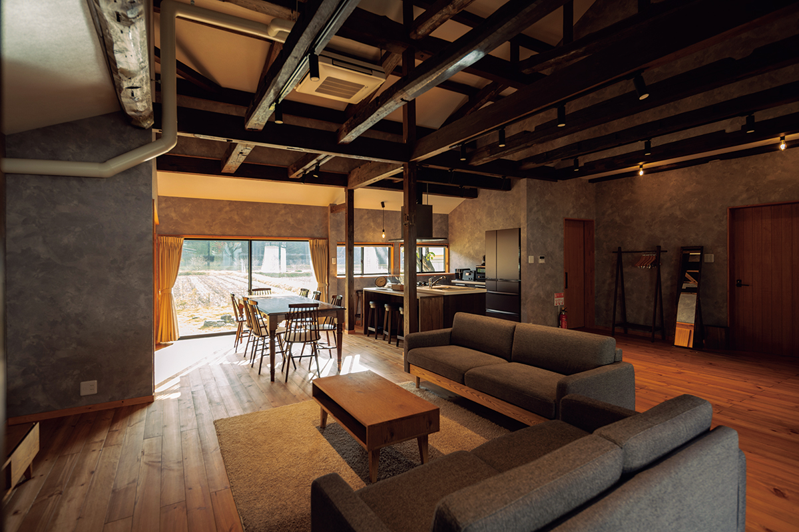
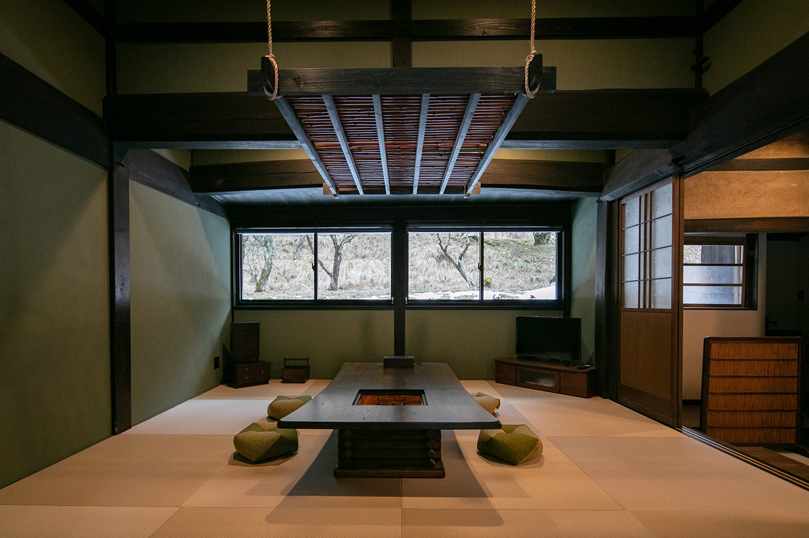
Природа здесь меняется с каждым сезоном, и время течёт медленно: в такой дом приезжают, чтобы ничего не делать. Ночь с ужином и завтраком стоила от 16 240 иен на человека при заселении вчетвером, с налогом и сервисным сбором (цена 2026 года).
NIOH no YADO
- Адрес
- префектура Киото, Аябэ, Муцуёри-тё, Итибасимо, 8-2
- Телефон
- +81 90-8826-8205
- Номера
- 3
- Цены / Вход
- от 16 240 иен с человека за ночь с ужином и завтраком при четырёх гостях в номере, с налогом и сервисным сбором
Шёлк
TANGO OPEN CENTER: как рождается танго-тиримэн
Танго-тиримэн, шёлковый креп полуострова Танго, признан традиционным ремеслом Японии. Самый важный этап его обработки это сэйрэн, очистка ткани, и в TANGO OPEN CENTER её можно увидеть своими глазами.
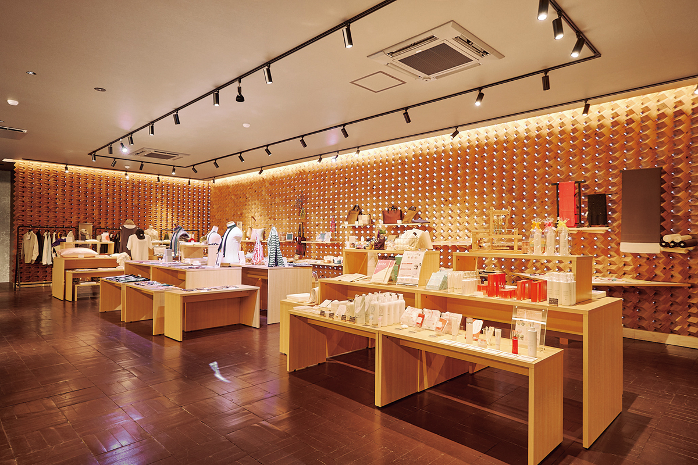
Здесь проходит экскурсия по фабрике «Мир сэйрэн», работают мастер-классы и фирменный магазин тканей Танго. За один визит видно и историю ремесла, и то, чем оно живёт сегодня и куда движется.
TANGO OPEN CENTER
- Адрес
- префектура Киото, Кётанго, Омия-тё, Кобэ, 3188
- Телефон
- +81 772-68-5151
- Часы работы
- 10:00–16:30
- Выходные
- суббота, воскресенье, праздничные дни, новогодние праздники
- Сайт
- tanko.or.jp/tof
Джин
MAIRINGEN DISTILLERY: джин из лесных трав
Молодая винокурня крафтового джина MAIRINGEN DISTILLERY спряталась в лесу лекарственных трав и деревьев на высоте 620 метров над Кётанго. Джин перегоняют из местных растений на чистой родниковой воде.
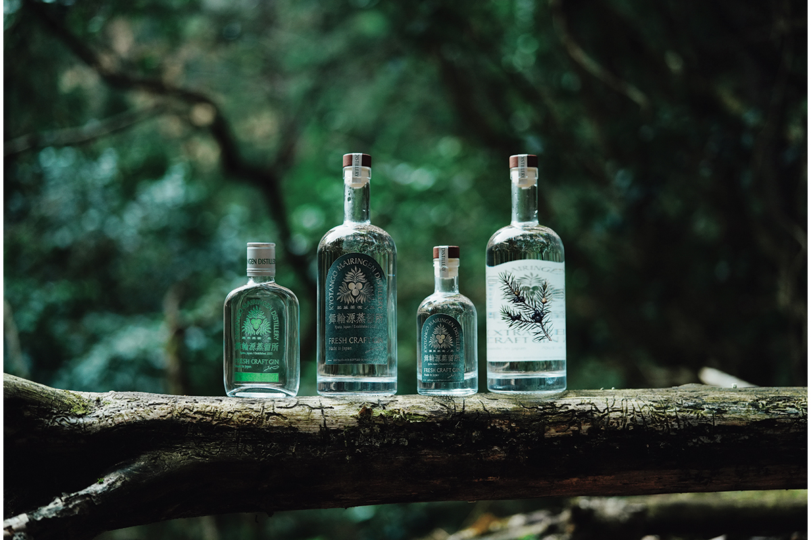
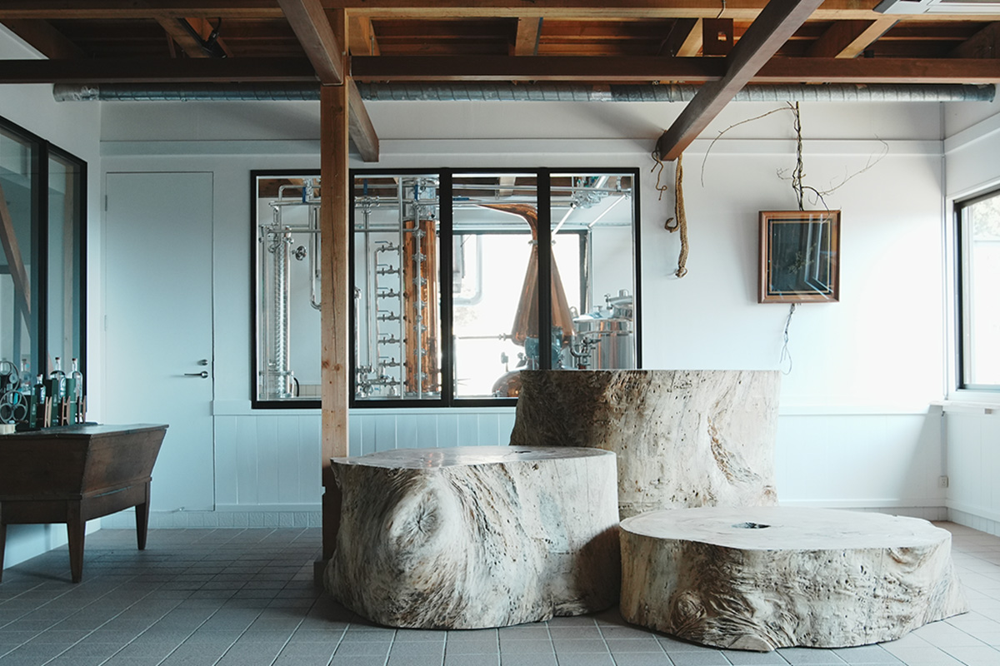
Здешний джин получил высшую золотую медаль на одном из крупнейших мировых конкурсов, и купить его можно прямо на месте.
MAIRINGEN DISTILLERY
- Адрес
- префектура Киото, Кётанго, Ясака-тё, Нонака, 10329-1
- Часы работы
- по предварительной записи
- Сайт
- mairingen.jp
Ремесло
Фудзиори: самая древняя ткань Японии
Фудзиори ткут из нитей, которые получают из коры дикой глицинии, растущей в горах. Считается, что эта ткань восходит к периоду Дзёмон и что это самая древняя ткань в Японии. Префектура Киото признала её нематериальным культурным достоянием.
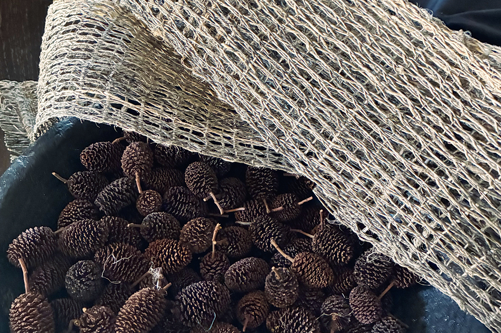
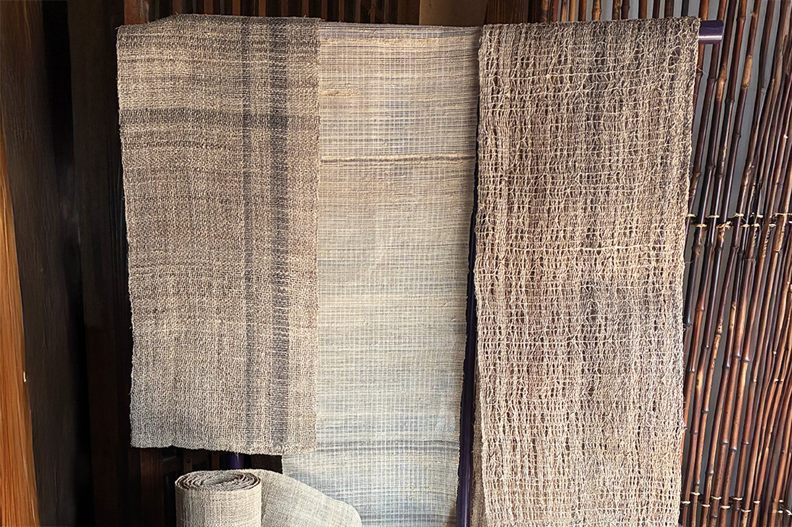
Традицию хранят в горной деревне Камисэя в Миядзу: там общество сохранения танго-фудзиори передаёт мастерство новым ткачам.
Общество сохранения танго-фудзиори
- Сайт
- fujiori.jp
Текстиль
kuska fabric: галстуки ручной работы
Марка ручного ткачества kuska fabric из Ёсано выросла из семейного производства танго-тиримэн, основанного в 1936 году. Собственная техника придаёт ткани объём, и из чистого шёлка здесь ткут вручную галстуки и палантины.
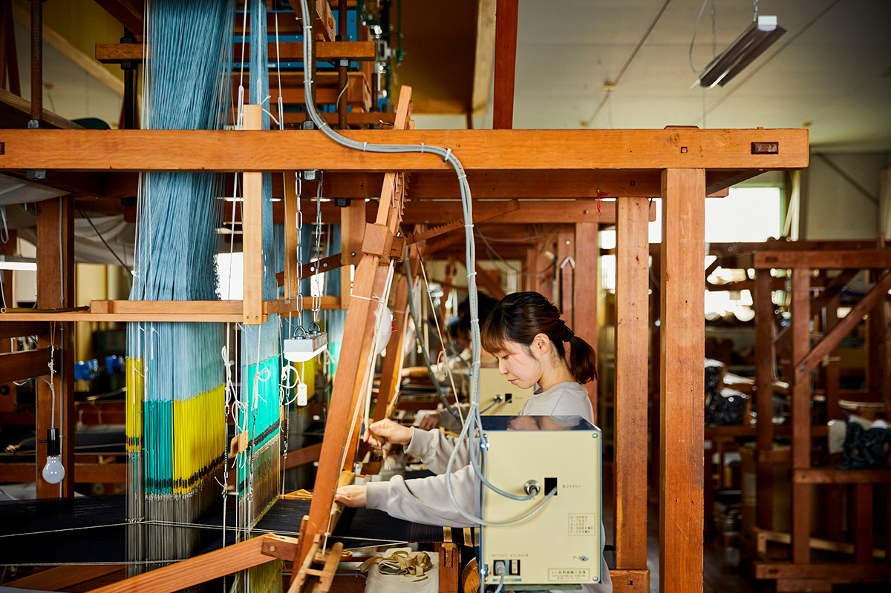
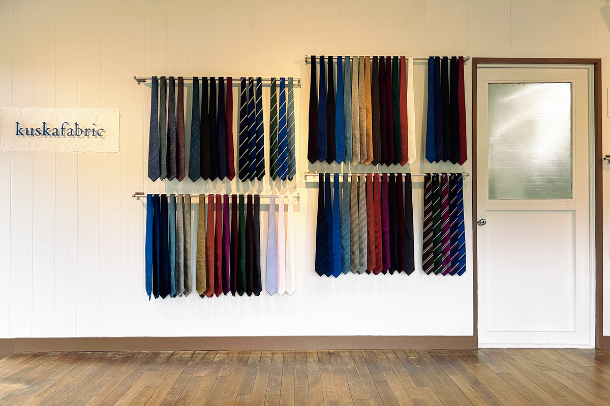
Галстуки и палантины продаются в магазине при мастерской, а при определённых условиях можно посмотреть и саму фабрику.
kuska fabric
- Адрес
- префектура Киото, уезд Ёса, Ёсано, Ивая, 384-1
- Телефон
- +81 772-42-4045
- Часы работы
- 10:00–17:00
- Выходные
- суббота, воскресенье, праздничные дни
- Сайт
- shop.kuska.jp
Наследие
Дом семьи Бито: купцы шёлкового края
Дом семьи Бито принадлежал торговцам танго-тиримэн и построен в конце периода Эдо. Снаружи его узнают по белым стенам и решёткам «тиримэн-госи», а в начале эпохи Сёва к японскому дому пристроили особняк в западном стиле.
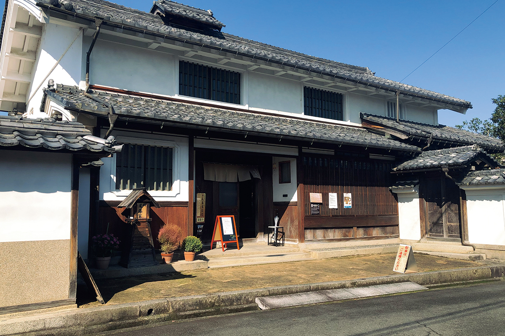
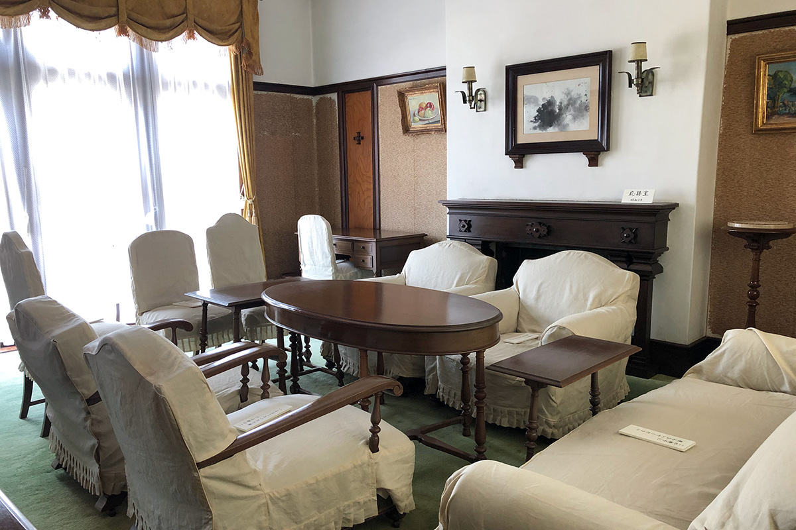
Такое сочетание японской и западной архитектуры признано важным культурным достоянием страны. Вход для взрослых стоил 440 иен в 2026 году.
Дом семьи Бито
- Адрес
- префектура Киото, уезд Ёса, Ёсано, Каэцу, 1085
- Телефон
- +81 772-43-1166
- Часы работы
- 9:00–17:00
- Выходные
- среда (если это праздник, то следующий день), новогодние праздники
- Цены / Вход
- взрослые 440 иен, школьники 110 иен
Маршрут
Как собрать поездку
Удобной базой для поездки по «Киото у моря» служит Аманохасидатэ. На берегу напротив косы стоит обэрж Chitose, где можно отдохнуть и познакомиться с местной кухней, а её владелец основал винодельню Amanohashidate Winery: вино из винограда, выращенного с видом на косу, лучше всего пробовать прямо там.
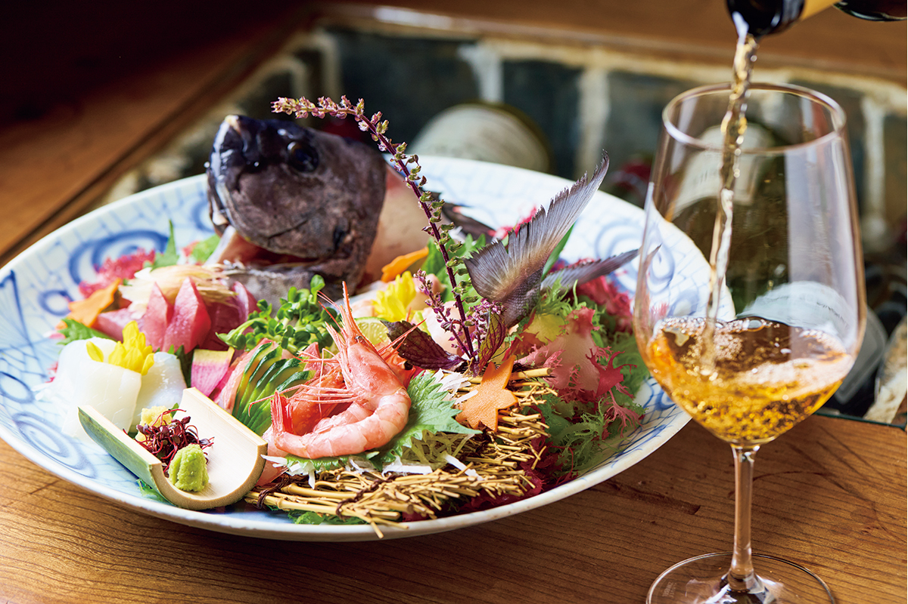
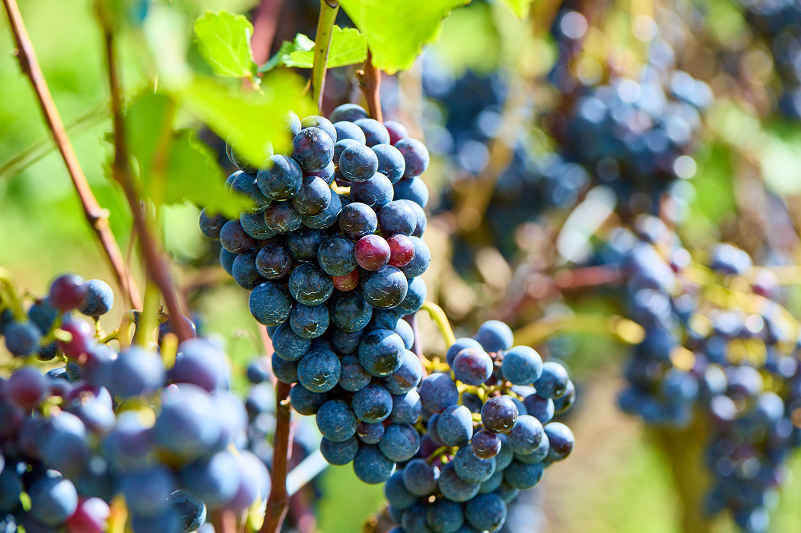
У основания косы стоит святилище Коно-дзиндзя, главное святилище старой провинции Танго, которое называют Мото-Исэ, а выше в горах его внутреннее святилище Манаи-дзиндзя. Здесь хорошо видно, что истоки японской еды и веры тоже на этом побережье.

На западе полуострова, в Кумихаме, раскинулся Wakuden no Mori. Это священная роща на родине Wakuden, знаменитого рётэй города Киото, и место, где природа, еда и искусство собраны вместе.
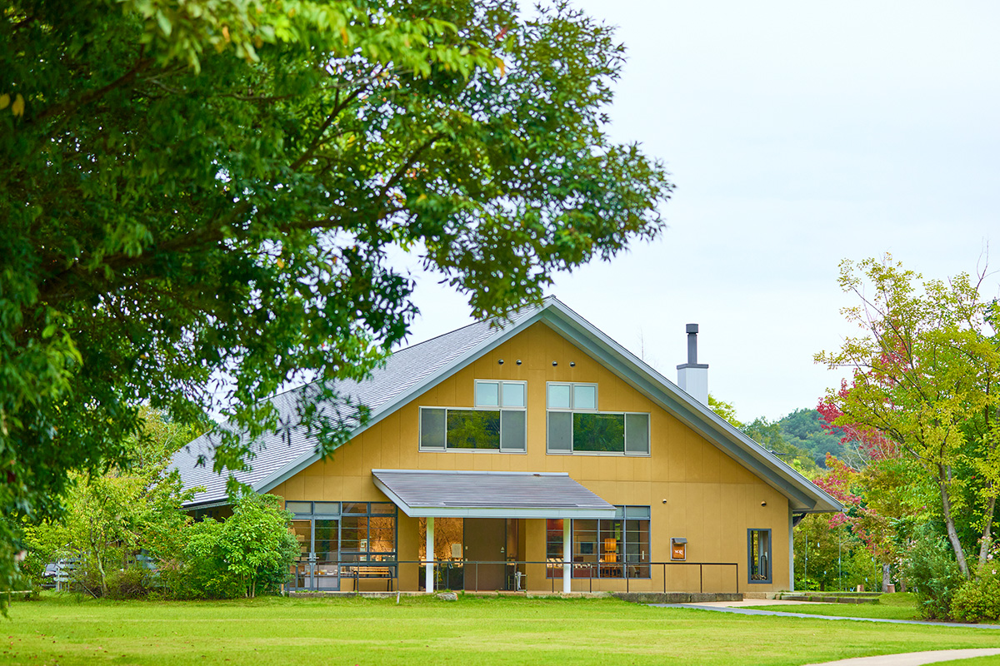
В Инэ вдоль воды тянутся лодочные дома фуная. Бухта здесь смотрит на юг, что редкость для Японского моря, а необитаемый остров работает как волнорез, поэтому вода спокойна круглый год, и рыбацкая деревня живёт своей кухней.

Зимой главная причина ехать на это побережье это краб. Лучшим считают таидза-гани, которого выгружают в порту Таидза в Кётанго. А в Миядзу семейная уксусная Iio Jozo, работающая с эпохи Мэйдзи, делает дорогой рисовый уксус и хочет превратить край в гастрономическое направление.


По совету главы Iio Jozo в Миядзу и Кётанго стоит искать рестораны с кухней на дровах, необычные суши-рестораны и стейк-хаусы с видом на море.
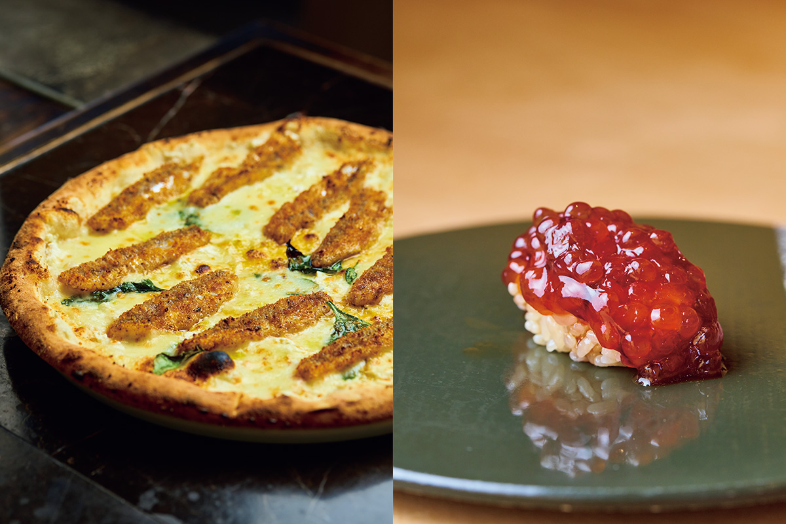
Фото: Косаку Китадзима.